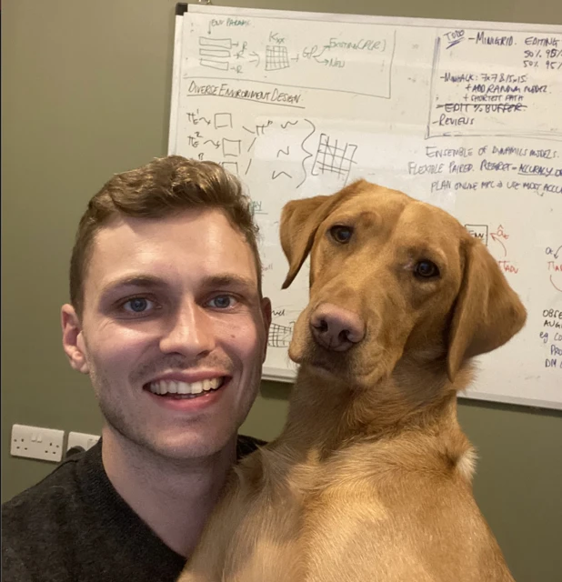
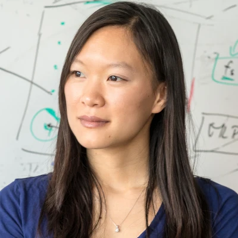
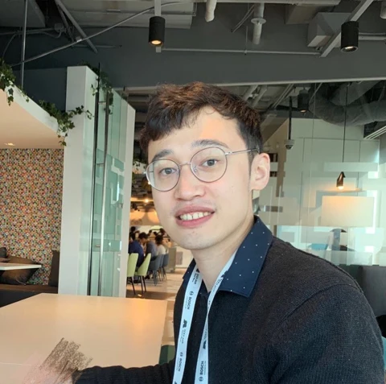

Generate at interactive speed
Deliver high-quality generation within the latency, memory, and compute budgets of real interaction.
1st Workshop on
Proposed Workshop at CVPR 2027
Seattle, USA | June 20 or 21, 2027 · Assigned day and room: To be determined
Real-time generation creates an opportunity for people to participate continuously in evolving generative worlds. Realizing this opportunity requires more than accepting human control signals: models must produce high-quality outputs efficiently, respond while feedback can still guide the user’s next action, and support interactions that people find useful and understandable.
LIVE brings together generative modeling, systems, and human–computer interaction (HCI) to address a central question: how can real-time generation enable effective human interaction, and how should interaction needs guide future model design? The workshop focuses on three connected research directions.
Deliver high-quality generation within the latency, memory, and compute budgets of real interaction.
Support continuous steering, interruption, and correction with timely feedback, while updating world state and retaining memory of past interactions to keep environments and character behavior coherent.
Use applications and user studies to understand interaction needs and guide the design of models, memory, interfaces, and training objectives.
Tencent / National University of Singapore (Adjunct)

Stealth World-Model Company / UCL
Runway
Ant Group / Robbyant
World Labs
Pika

Technical University of Munich
All times below are relative to the start of the proposed five-hour session, planned for June 20 or 21, 2027. The assigned day, start time, room, and speaker order are to be determined. Each invited talk includes 20 minutes of presentation and 5 minutes of Q&A.
| Time | Event | Speaker |
|---|---|---|
| 00:00–00:10 | OpeningApplications and research questions | Organizers |
| 00:10–00:35 | Invited talkProposed theme: Toward Playable Generative Worlds: Consistent Mechanics and Controllable Interaction | Yeying Jin |
| 00:35–01:00 | Invited talkProposed theme: Open-ended world simulation | Jack Parker-Holder |
| 01:00–01:25 | Invited talkProposed theme: Deploying interactive world models | Hao Ouyang |
| 01:25–01:50 | Invited talkProposed theme: Spatial representations for generative worlds | Katja Schwarz |
| 01:50–02:15 | SpotlightsContributed research | Presenters to be determined |
| 02:15–03:00 | Interactive sessionCoffee, demonstrations & posters | Presenters to be determined |
| 03:00–03:25 | Invited talkProposed theme: What Should a Generated World Remember? Evaluating 3D Consistency During Interaction | Angela Dai |
| 03:25–03:50 | Invited talkProposed theme: Generative models as creative tools | Jimei Yang |
| 03:50–04:15 | Invited talkProposed theme: Fast generation and editable outputs | Chenlin Meng |
| 04:15–04:55 | PanelHow should user experience shape real-time models? | Panelists to be determined |
| 04:55–05:00 | ClosingA shared research agenda | Organizers |
The demo session is planned to include 4–6 demonstrations of steering, interruption, or correction during an ongoing application task. Final demonstration arrangements are to be determined.
We welcome research on real-time generative worlds and effective human interaction, including, but not limited to, the following topics.
Original, unpublished research on real-time generative worlds and human–AI interaction. Accepted papers are intended for the CVPR 2027 workshop proceedings, subject to final publication arrangements.
| Submission deadline | |
|---|---|
| Author notification | |
| Camera-ready deadline |
Submission PortalTo be determined · Not yet open
Demo and discussion submissions, including preliminary findings and perspectives on interactive generative worlds. Contributions to this track will not be included in the workshop proceedings.
| Submission deadline | |
|---|---|
| Author notification | |
| Final version deadline | To be determined |
Submission PortalTo be determined · Not yet open
Dates are tentative and subject to workshop acceptance. All submission deadlines are at 23:59 Anywhere on Earth (AoE). Workshop: June 20 or 21, 2027; the assigned day is to be confirmed.
We welcome research papers, work in progress, and interactive demos from both academia and industry.
Submission links and final instructions will be announced with the full call for papers. The dates above are tentative.
Adobe Research
University of Rochester
Roblox

Google DeepMind
Simon Fraser University
Adobe Research
Adobe Research
Stanford University
Harvard University
HKUST
Adobe Research
Tsinghua University
For questions about the workshop, please contact:
Yuqian Zhou (primary contact): zhouyuqian133@gmail.com
Zhenghong Zhou (secondary contact): zhouzhenghong1999@gmail.com